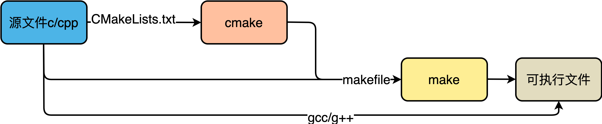

c或cpp软件编译
整体流程
- 编辑器编写源代码，如
*.c/*.cpp文件。 - 编译器编译代码，生成目标文件，如
*.o文件。 - 链接器链接目标代码，生成可执行文件，如
*.exe文件。
如果项目较大，步骤2和3就非常麻烦，因此就产生类似批处理的程序，批处理编译和链接源文件，这就是make/makefile/cmake/CMakeLists.txt/configure等工具或文件。
make是一个批处理工具，根据makefile文件进行编译和链接。makefile文件内就包含了gcc/g++等编译命令。makefile文件本身比较复杂，并且无法跨平台。因此产生了cmake利用CMakeLists.txt跨平台产生makefile。CMakeLists.txt无法自动生成，是最终需要手动编写的脚本。
当然，如果对makefile语法熟悉，当然可以手动编写makefile文件；如果项目较小，可以不编写makefile/CMakeLists.txt，手动使用gcc/g++进行编译和链接。

makefile
c/cpp编译和链接
一个示例代码hello.c如下：
生成hello可执行文件所需要的命令为：gcc -v -o hello hello.c
该过程可分解为4个步骤：预处理、编译、汇编、链接。大部分情况下，一般来说，无论是C还是C++，首先要把源文件编译成中间代码文件，在Windows下也就是*.obj文件，UNIX下是*.o文件，即Object File，这个动作叫做编译（compile），一般来说每个源文件都对应一个Object File。然后再把大量的Object File组合成执行文件，也就是打包，这个动作叫作链接（link），可以链接成可执行文件，或者动态库*.so/*.dll，或者静态库*.a/*.lib。
在编译时，编译器只检查程序语法和函数、变量是否被声明，如果函数未声明，编译器会给出警告，但可以生成Object File。在链接时，链接器会在所有的Object File中寻找函数实现，如果找不到，就会报链接错误，在VC下，这种错误一般是Link 2001错误，也就是说链接器未找到函数的实现，需要指定函数的Object File。

makefile规则
makefile大致是先处理一些环境变量或参数，然后从某一个位置开始执行命令集。
- target：可以是一个Object File（目标文件），也可以是一个执行文件，还可以是一个标签（label）。
- prerequisites：生成该target所依赖的文件或target。
- command：该target要执行的命令（任意的shell命令）。
也就是说，target这一个或多个的目标文件依赖于prerequisites中的文件，其生成规则定义在command中。
大多数的make都支持“makefile”和“Makefile”这两种默认文件名。如果要指定特定的Makefile，你可以使用make的-f和--file参数，如：make -f Make.Linux或make --file Make.AIX。
示例

上述示例中，定义了2个参数，3个target。makefile可以有多个target，target之间可以独立，也可以相互依赖或关联，但只能从某一个开始执行，默认情况下从第一个target执行。上例中，target0由2个子target组成。类似于C语言，变量类似于宏参数的定义，找target并执行类似于找main函数并执行命令。在Makefile中的命令，必须要以Tab键开始。
CMake
一个利用CMake构建项目的典型流程：
- 编写CMake的配置文件
CMakeLists.txt。 - 执行命令
cmake <PATH>或者ccmake <PATH>，其中<PATH>为CMakeLists.txt所在的目录。相比cmake，ccmake提供了一个交互式界面。 - 使用
make命令进行构建。
在开发过程中经常需要使用外部项目，*.cmake文件是外部包的配置文件，内容与CMakeLists.txt类似，以提供关于包最基本的信息，便于利用CMake构建项目。
What is the use of .cmake files in install function of CMakeLists.txt? How to create a ProjectConfig.cmake file youtube/Deep CMake for Library Authors - Craig Scott - CppCon 2019 set执行详解
语法速查
指定cmake最小版本
在有些情况下，如果CMakeLists.txt文件中使用了一些高版本cmake特有的一些命令的时候，就需要加上这样一行，提醒用户升级到该版本之后再执行cmake。
设置项目名称
上例中，引入两个变量demo_BINARY_DIR和demo_SOURCE_DIR，同时，cmake自动定义了两个等价的变量PROJECT_BINARY_DIR和PROJECT_SOURCE_DIR。
设置编译类型
上例中，demo为自定义项目名称。add_library默认生成静态库，通过上例中命令生成的文件名字如下：
- 在Linux下分别是：
demo/libcommon.a/libcommon.so - 在Windows下分别是：
demo.exe/common.lib/common.dll
指定编译包含的源文件
- 明确指出包含哪些源文件
- 搜索所有cpp文件
上例中，aux_source_directory(<dir> <VAR>)表示搜索目录<dir>下所有的源代码文件，并将文件列表存储到变量<VAR>中。
- 自定义搜索规则
查找指定的包
在实际开发中，经常需要用到第三方开源库，这些开源库有可能通过apt-get install方式安装到系统目录下，也有可能自己下载源码并编译安装到指定目录下。在使用时，需要根据实际需求寻找到指定版本库的头文件包含路径、链接库路径等。CMake提供了find_package()命令查找这些依赖包。find_package()有两种工作模式，分别是：
- Module模式。默认搜索模式。
- Config模式。当Module模式失败，或者
find_package()中指定了CONFIG/NO_MODULE等关键字时启用。
当执行find_package(XXX)时，CMake搜索流程图为：

- 命令签名
package：必填参数。需要查找的包名，注意大小写。version和EXACT：可选参数。version指定版本，如果设置就必须找到该包与version指定版本号的兼容版本；如果同时指定了EXACT，则表示必须完全匹配而不是兼容版本就可以。QUIET：可选参数。查找失败则输出报错信息，但如果指定REQUIRED则总是输出。MODULE：可选参数。必须MODULE模式查找。REQUIRED：可选参数。表示一定要找到包，找不到立即停止。-
COMPONENTS components：可选参数。查找的包中必须包含组件（components），否则立即停止。 -
两种搜索模式的搜索原理
-
Module模式查找
Find<PackageName>.cmake配置文件。查找路径有2个：CMAKE_MODULE_PATH。该变量默认为空，可通过set命令赋值。CMAKE_ROOT下的Modules目录，CMAKE_ROOT为CMake安装目录。比如/usr/share/cmake-3.10/Modules。
-
Config模式查找
PackageName>Config.cmake或<lower-case-package-name>-config.cmake配置文件。查找路径有3个：<PackageName>_DIR。该变量默认为空，可通过set命令赋值，该路径为<PackageName>Config.cmake或<lower-case-package-name>-config.cmake文件所在目录。CMAKE_PREFIX_PATH/CMAKE_FRAMEWORK_PATH/CMAKE_APPBUNDLE_PATH的CMake变量或环境变量。默认为空。PATH环境变量。CMake会遍历PATH环境变量中的每个路径，如果路径以bin或者sbin结尾，则自动回退到上一级，以便得到根目录。在根目录中，CMake查找是否存在<PackageName>Config.cmake或<lower-case-package-name>-config.cmake配置文件，如果没有，则会继续检查或者匹配一些路径，参见“轻松搞定CMake”系列之find_package用法详解。
-
查找失败的解决方法
-
如果明确知道要查找的库
<PackageName>Config.cmake或<lower-case-package-name>-config.cmake文件所在路径，直接set设置变量<PackageName>_DIR。比如： -
如果有多个包的配置文件需要查找，可以将配置文件统一存放到如
cmake的目录下，然后利用set设置变量CMAKE_PREFIX_PATH指向这个cmake目录路径。注意：每个包的配置文件需要单独放置到命名为包名的目录下（文件夹名不区分大小写），否则会找不到。
补充动态库*.so和静态库*.a的区别，动态库即使编译完成，也是和其它动态库是分离的，因此每次用都要把所有涉及的动态库全部添加进来；静态库在编译时就和程序结合在一起了。
查找指定的库文件
find_library(<VAR> <name> <path>)查找到指定的预编译库，并将该路径存储在变量中。类似的命令还有find_file()、find_path()、find_program()、find_package()。
载入CMake预定义模块
include用来载入CMakeLists.txt文件，也用于载入预定义的CMake模块。
上述OPTIONAL参数的作用是文件不存在也不会产生错误。可以指定载入一个文件或模块，如果载入模块，那么将在CMAKE_MODULE_PATH中搜索这个模块并载入。载入的内容将在处理到 include语句时直接执行。
设置包含的目录
设置需要链接的库
下例中，demo均为自定义项目名。
- 指定链接动态库或静态库
- 指定全路径
- 指定链接多个库
也就是，cmake链接库的方法为：
在Windows下，CMake会根据链接库目录，搜索*.lib文件。在Linux下会搜索*.so或*.a文件，如果两者都存在，则优先连接动态库*.so文件。
cmake中的变量
- 一般变量
类似于C++局部变量，仅在所在作用域（当前CMakeLists.txt）有效，除非后面使用PARENT_SCOPE。
- 缓存变量
类似于C++全局变量，在cmake整个运行期间有效。
- 环境变量
使用$ENV{NAME}可以调用系统的环境变量。
设置变量
下例中，SRC_LIST均为自定义变量名，demo均为自定义项目名。
set直接设置变量的值
set追加变量的值
用户传参控制变量的值
option()指令。如：
使用时，通过命令行传入值：
常见内置变量
| 变量 | 含义 |
|---|---|
| CMAKE_INSTALL_PREFIX | 指定安装目录，一般作为cmake命令行参数 |
| CMAKE_SOURCE_DIR | CMakeLists.txt所在目录 |
| CMAKE_CURRENT_SOURCE_DIR | 当前正在处理CMakeLists.txt所在目录 |
| PROJECT_SOURCE_DIR | 代码根目录 |
| PROJECT_BINARY_DIR | 执行cmake命令所在目录，一般是创建build目录并且进入该目录，执行cmake命令 |
| CMAKE_INCLUDE_PATH | 头文件所在目录 |
| CMAKE_LIBRARY_PATH | lib库所在目录 |
| CMAKE_BUIlD_TYPE | 编译类型，例如Debug、Release。例如-DCMAKE_BUIlD_TYPE=Debug |
| CMAKE_C_COMPILER / CMAKE_CXX_COMPILER | 指定C/C++编译器路径，例如：set(CMAKE_C_COMPILER "/usr/local/gcc")或-DCMAKE_C_COMPILER=/usr/local/gcc |
| CMAKE_C_FLAGS / CMAKE_CXX_FLAGS | 传递FLAGS给C/C++编译器，两个变量分别指定C/C++编译的选项，例如：set(CMAKE_CXX_FLAGS "-g") |
| CMAKE_CXX_FLAGS_DEBUG | 除了CMAKE_CXX_FLAGS外，在Debug配置下，额外的参数 |
| CMAKE_CXX_FLAGS_RELEASE | 除了CMAKE_CXX_FLAGS外，在Release配置下，额外的参数默认参数，参数默认值为-O3 -NDEBUG |
| CMAKE_VERBOSE_MAKEFILE | set(CMAKE_VERBOSE_MAKEFILE ON)：开启详情打印 |
上述变量均为CMakeLists.txt文件中可通过set配置的内置变量，如果通过cmake执行时临时加上的变量设置，则需要加上-D前缀。比如，指定目标文件的安装路径时，可以在CMakeLists.txt内设置CMAKE_INSTALL_PREFIX变量：
同样可以在执行cmake时临时设置：
在指定目标文件安装位置的场景下，执行cmake时临时设置则是推荐方式。
此外，补充常见的C++编译选项：
打印
可以通过message()指令打印出变量的值，类似print()函数。
Cmake 语法与实战入门 CMake基本常识 CMake-official_help cmake：指定目标文件的安装位置 WeNet CmakeList.txt实战解读